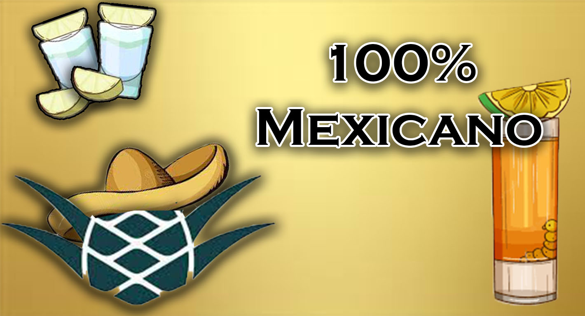

Nuestros Productos
Guarú Mezcal Artesanal te ofrece una gran variedad de productos, desde nuestro tradicional Mezcal Artesanal, como las cremas Artesanales, con propiedades que debes probar para el mejoramiento de la piel.
#Explorar más
El mezcal es una bebida típica de México, que se obtiene de la destilación del maguey o agave, una planta suculenta con espinas y un crecimiento muy lento (unos 80 años) que muere cuando produce su fruto.
Reglas de oro antes de tomar Mezcal...
1. Primero lo primero: El mezcal se saborea, no se shotea.
2. El precio no tiene nada que ver con la calidad.
3. El sabor no siempre es un buen indicador de calidad.
4. Agítalo y ve si hace muchas perlas (burbujas).
5. También puedes probar la calidad dentro de la botella.
6. Siempre pide tu mezcal blanco.
7. Fíjate que tu mezcal tenga por lo menos 40° de alcohol.
8. Evita el mezcal con gusano.
9. Las naranjitas son para limpiar el paladar.
10. Ten cuidado al coctelear.